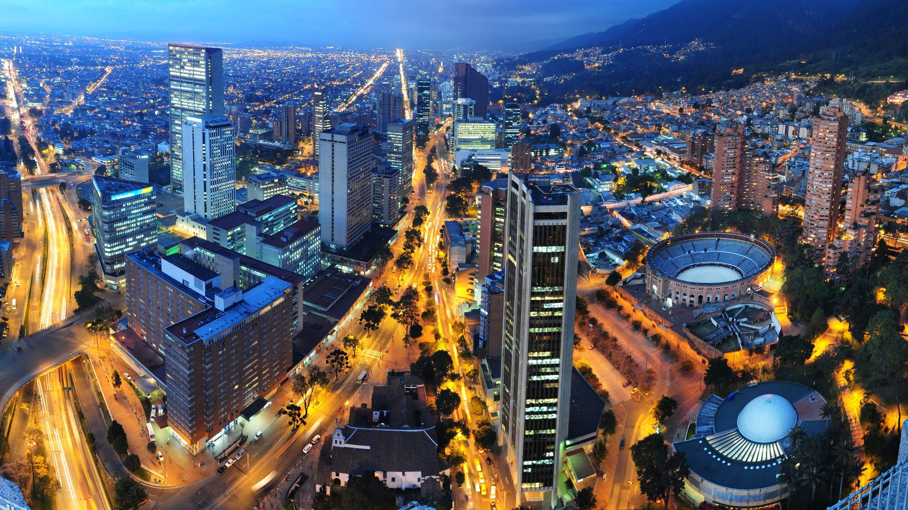

Bogotá: Capital nas Alturas e Coração Cultural da Colômbia
Cercada pelos Cerros Orientais da Cordilheira dos Andes e situada a cerca de 2.640 metros de altitude, Bogotá é a capital e a maior cidade da Colômbia, além de um dos grandes centros culturais da América Latina. Fundada em 6 de agosto de 1538 pelo conquistador espanhol Gonzalo Jiménez de Quesada, a cidade nasceu em território do povo Muisca, que chamava a região de Bacatá.
A Origem do Nome e o Antigo Território Muisca
O nome "Bogotá" tem raízes na palavra muisca "Bacatá", que era o nome de um dos principais centros do território indígena. Quesada batizou o povoado de Santa Fe, em homenagem a Santa Fe, na região de Granada, na Espanha, e com o tempo o nome passou a ser Santafé de Bogotá. Graças à sua posição elevada, ao clima ameno e à fértil Savana de Bogotá, a região se tornou o centro político e administrativo do domínio espanhol na área.
Durante o período colonial, Bogotá foi capital do Vice-Reino de Nova Granada, que reunia territórios dos atuais Colômbia, Venezuela, Equador e Panamá. Igrejas, conventos e casarões coloniais surgiram no centro da cidade e muitos deles resistem até hoje.
A Lenda de El Dorado e a Independência
Foi nas proximidades de Bogotá, na Laguna de Guatavita, que nasceu a famosa lenda de El Dorado, inspirada em um ritual muisca em que o chefe era coberto de ouro em pó e oferecia tesouros às águas. Séculos depois, a cidade foi peça-chave na luta pela independência: após a vitória na Batalha de Boyacá, em 1819, Bogotá tornou-se a capital da Grã-Colômbia e, mais tarde, da República da Colômbia.